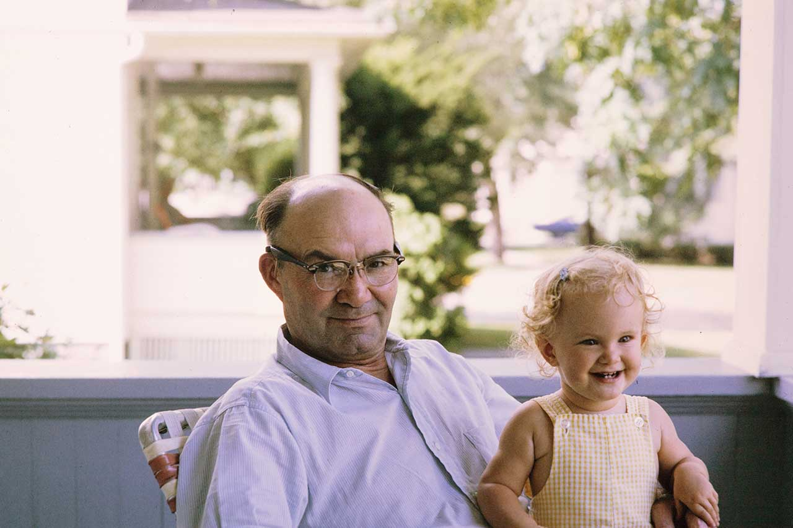
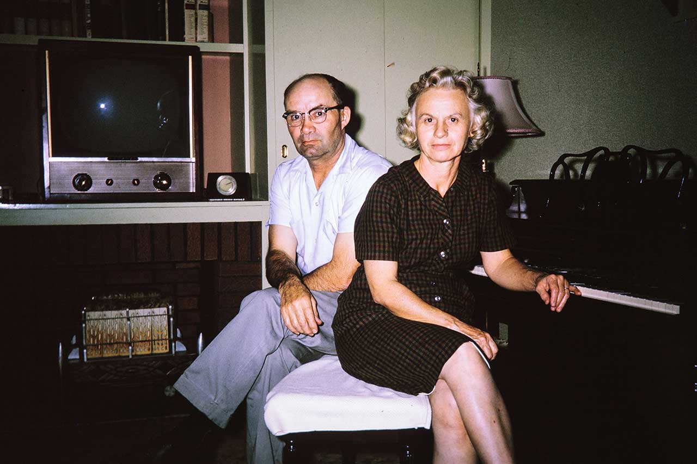
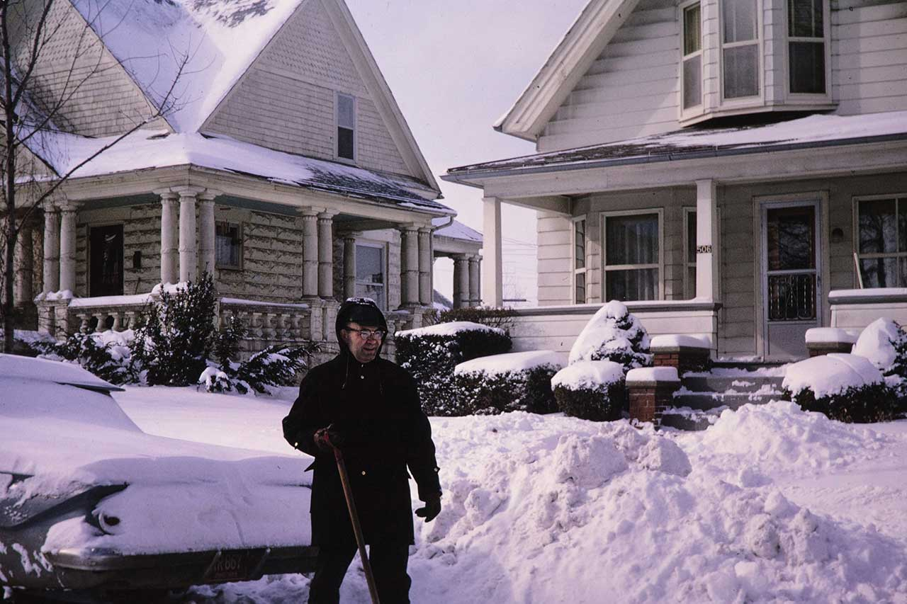
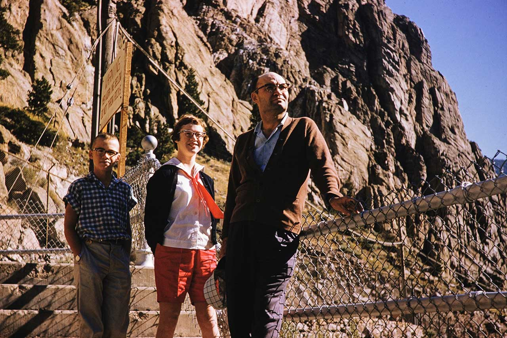
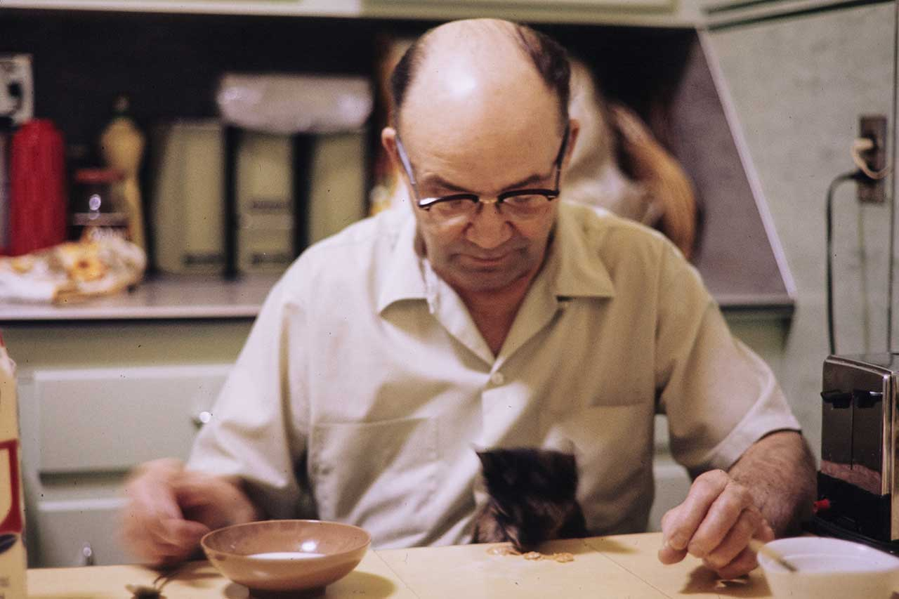
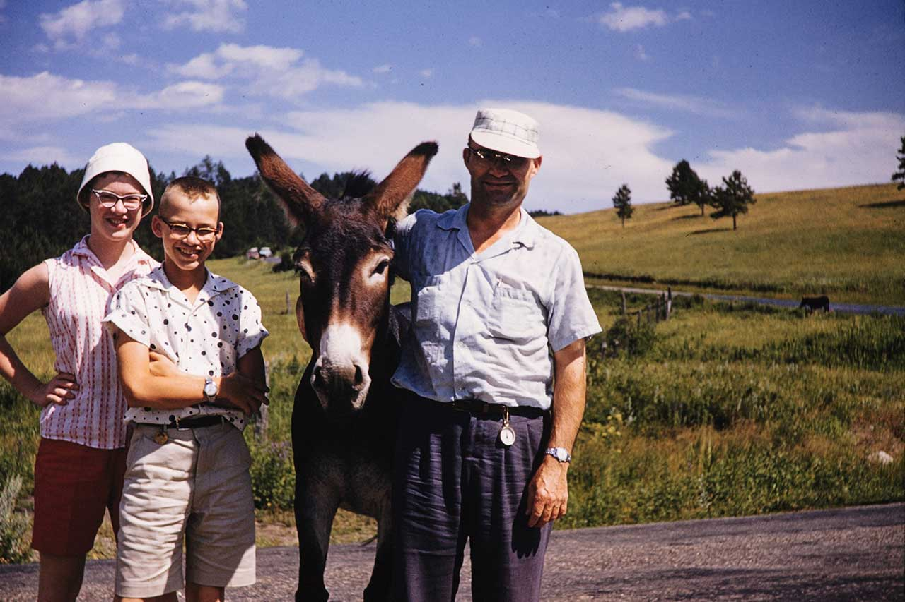
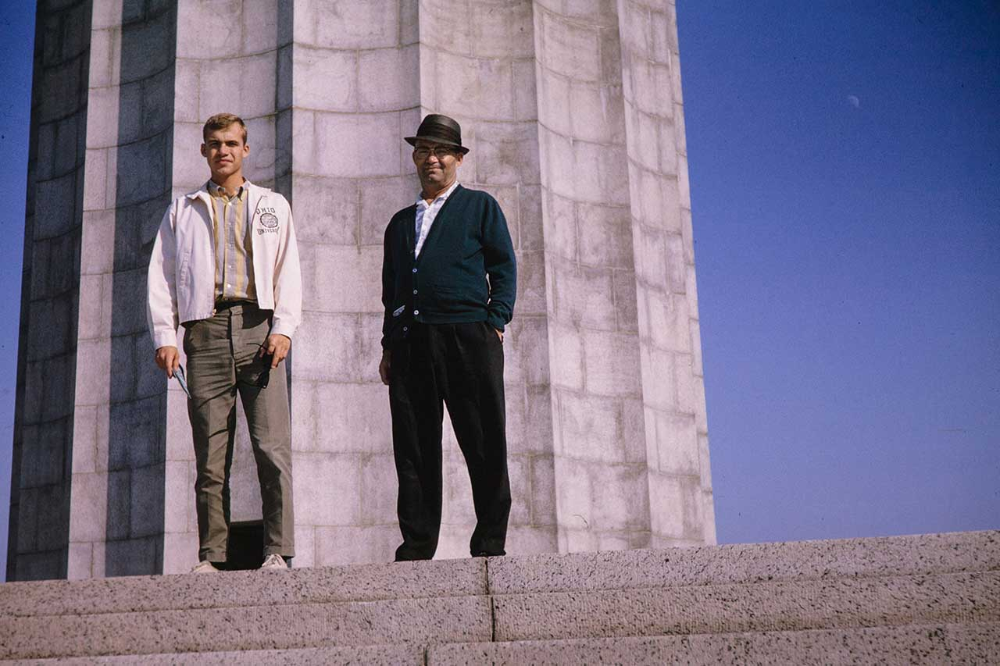
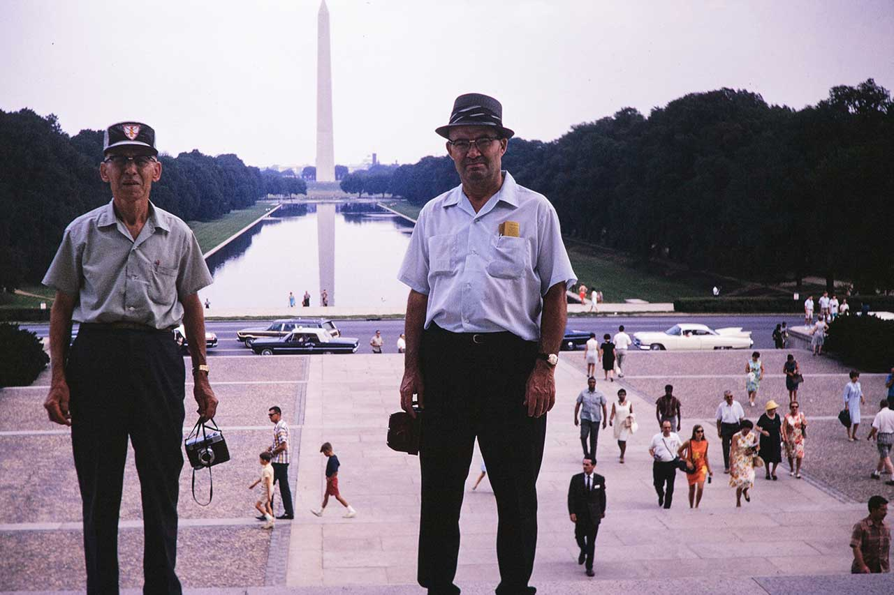

1/1/2021
I never got the chance to meet my grandfather. He died in September 1979 of a heart attack, nearly 4 years before my birth. I share a birthday with him, my parents gave me the middle name Paul in honor of this coincidence. In the internet age, little exists of his life and I thought it was time this 20th century man got introducted to the 21st century.
My grandfather, Paul Kuhn Cline was born in May of 1907, surrounded by midwestern farm country in Shelby Ohio. Early in his life, his father purchased a farm 10 miles north of Shelby on the edge of the even smaller midwestern farm town of New Haven Ohio. The Cline farm and home sat on Klein Rd in New Haven. The road was named after our family but the history of the misspelling is unknown. In the 1920s as a teen boy, Paul Cline dropped out of school to work on the family farm. According to my father, it was likely not voluntary as my great grandfather needed the labor of the young Paul on the farm.
Against his father's will, Paul Cline did not want to work for his father on the family farm. Early in his adulthood, Paul found a job working on the railroad in Willard just 4 miles up the road from the Cline farm in New Haven. He likly started working on the railroad in the late 1920s.
In 1935, when Paul was 28, he secretly married Rosalyn Catherine Barry. The couple eloped in secret to Wheeling, West Virginia. My grandmother, Rosalyn, was a school teacher. They eloped in secret so she could continue to teach. In those days married women could not teach. The depression years were hard on the young couple and Paul would frequently get laid off from the railroad. He also ran a small auto repair shop in New Haven during the 1930s. Many of the customers were unable to pay and Paul had a ledger of IOUs that never collected. In January of 1937, they had a public wedding and Rosalyn was forced out of her job that summer.
In the early 1940s, Paul and Rosalyn purchased a home at 506 Euclid Street in Willard and this would become their family home. It was a typical midwestern home for them to raise a family in. My aunt Lois was born in Feburary of 1941 during the early years of WWII and my father, Robert, was born just after the end of the war in September of 1945. The war years provided steady work on the railroad for Paul. The Willard station on the B&O Railroad was an important stop to feed the war in Europe.
From all the photos I have seen, my grandfather Paul seems to be a classic man-of-his-times, grizzled and weathered from hard work on the railroad. He barely smiled in photos and he smoked as all men of his day did. He looks stoic and gruff in many pictures but I am told he had a warm heart. He never did graduate high school and never went to college unlike my grandmother Rosalyn who had a college degree.
Paul and Rosalyn were very frugal people. Having spent their early adulthood in depression years of the 1930s, it taught them to live within their means. During the 1950s Paul picked up a second job as a Culligan water softener guy to bring home extra income. With the shifting cultural times, Rosalyn was able to return to work as a married women and began to teach again around 1953. This allowed the Cline family to be comfortably middle class in the 50s while raising my aunt and father.
When Lois and Robert moved on to college and their own lives by the mid 1960s, Paul and Rosalyn became empty nesters, but had saved enough to get their kids to college and visit their children. He retired from the B&O Railroad in 1972 at the age of 65.
I don't know much about my grandfather's hobbies, I don't suspect he had many. Later in his life, he had heart issues which he died from in 1979 at the age of 72. My grandmother Rosalyn outlived him by many years.
Most of the photos of him come from trips he took later in life, but he spent the majority of his life around the Willard and New Haven area. He is buried with my grandmother in the New Haven Cemetery along with other family members.